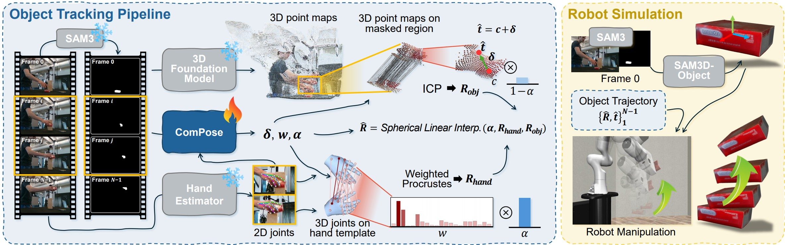

ComPose combines object and hand cues from foundation models within a unified tracking pipeline. It (i) adaptively selects informative hand joints, (ii) combines object- and hand-derived cues for motion estimation, and (iii) refines the resulting object motion using visible geometric evidence and a learned correction. Temporal consistency is enforced over both rotation and translation, producing stable 3D object trajectories without external smoothing.
@article{shin2026compose,
author = {Shin, Jisu and Lee, Junoh and Lee, JunGyu and Bae, Inhwan and Lee, Dohyeon and Im, Hokyun and Lee, Youngwoon and Jeon, Hae-Gon},
title = {ComPose: When to Trust Hands for Object Pose Tracking},
journal = {arXiv preprint arXiv:2605.23523},
year = {2026},
}